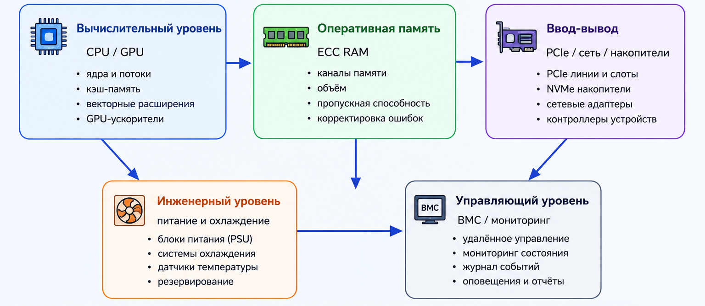

Аппаратная архитектура высокопроизводительных серверов
Высокопроизводительный сервер представляет собой не просто мощный компьютер, а согласованную аппаратно-программную платформу, рассчитанную на интенсивные нагрузки, длительную эксплуатацию, масштабирование и контроль состояния.

Ключевые аппаратные подсистемы
Процессоры
Процессоры выполняют основную вычислительную работу. Для серверов важны число ядер, поддержка многопоточности, объём кэша и возможности работы с большим объёмом памяти.
Оперативная память ECC
Память ECC позволяет обнаруживать и исправлять отдельные ошибки, что особенно важно для систем, работающих непрерывно и обрабатывающих критичные данные.
PCIe и ввод-вывод
Шины и интерфейсы связывают процессоры с сетевыми адаптерами, GPU-ускорителями и NVMe-накопителями. Недостаток линий PCIe может стать узким местом.
GPU-ускорители
Графические и специализированные ускорители применяются в задачах искусственного интеллекта, моделирования и обработки больших массивов данных.
BMC и управление
Контроллер удалённого управления позволяет отслеживать температуру, питание, ошибки оборудования и управлять сервером без физического доступа.
Питание и охлаждение
Системы питания и охлаждения обеспечивают устойчивую работу оборудования при высокой плотности размещения в стойке.
Почему важна согласованность подсистем
Высокопроизводительный сервер работает эффективно только при сбалансированной работе всех аппаратных подсистем. Если один компонент значительно слабее остальных, он становится узким местом и ограничивает общую производительность сервера.
| Подсистема | Если подсистема слабая | Возможное последствие |
|---|---|---|
| Оперативная память | Недостаточный объём или низкая пропускная способность | Процессор простаивает в ожидании данных, приложения работают медленнее |
| PCIe и ввод-вывод | Не хватает линий PCIe или используется устаревшее поколение интерфейса | NVMe-накопители, сетевые адаптеры и GPU-ускорители не раскрывают свою скорость |
| Сеть | Малая пропускная способность или высокая задержка | Кластерные и облачные сервисы медленнее обмениваются данными между узлами |
| Охлаждение | Недостаточный отвод тепла от процессоров, памяти и накопителей | Оборудование снижает частоты, возрастает риск перегрева и нестабильной работы |
| BMC и мониторинг | Нет удобного контроля состояния оборудования | Сложнее заранее заметить сбой, перегрев или ошибку питания |
Аппаратные компоненты сервера
| Компонент | Назначение | Возможное узкое место |
|---|---|---|
| CPU | Выполнение вычислений и обработка запросов | Недостаток ядер, кэша или пропускной способности памяти |
| RAM ECC | Рабочее хранение данных приложений | Недостаточный объём или низкая пропускная способность |
| PCIe | Подключение накопителей, сетевых карт и ускорителей | Нехватка линий или поколение интерфейса |
| NVMe SSD | Высокоскоростное локальное хранение | Перегрев, ограничения контроллера, недостаток PCIe |
| BMC | Мониторинг и удалённое управление | Недостаточная интеграция с системой администрирования |